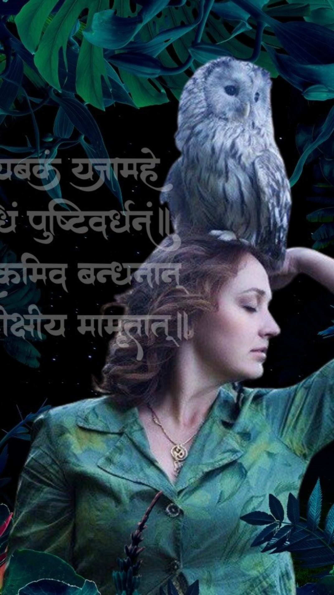
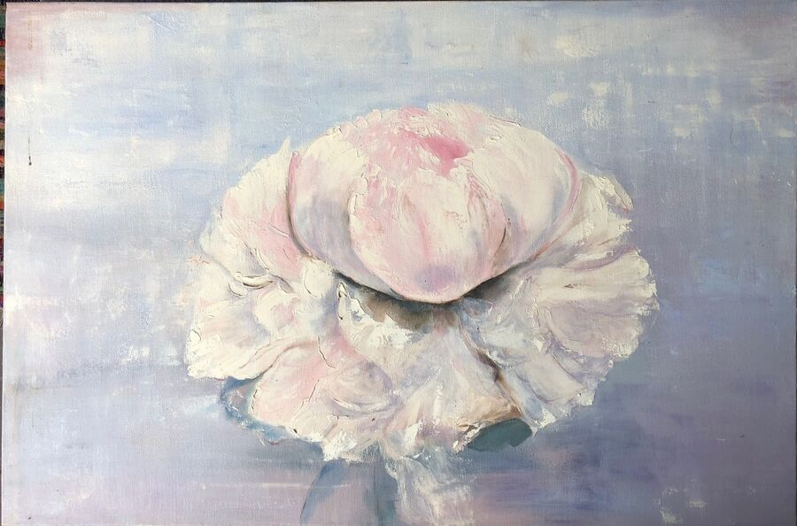
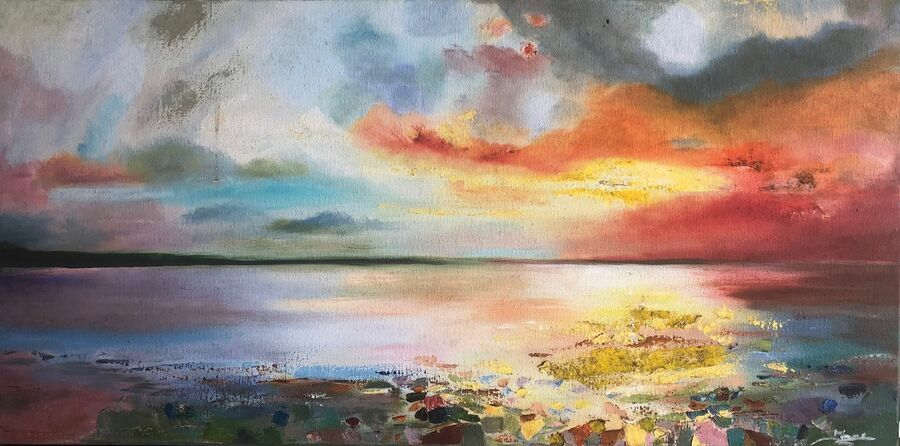
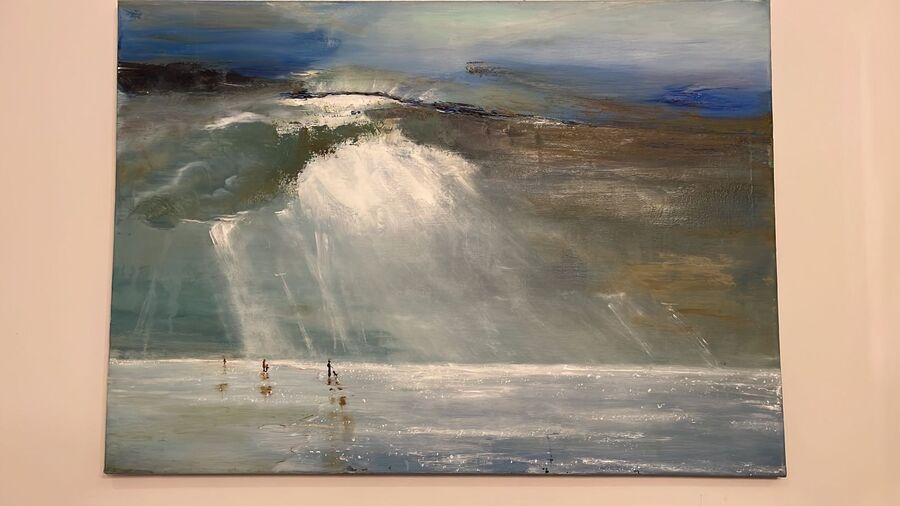
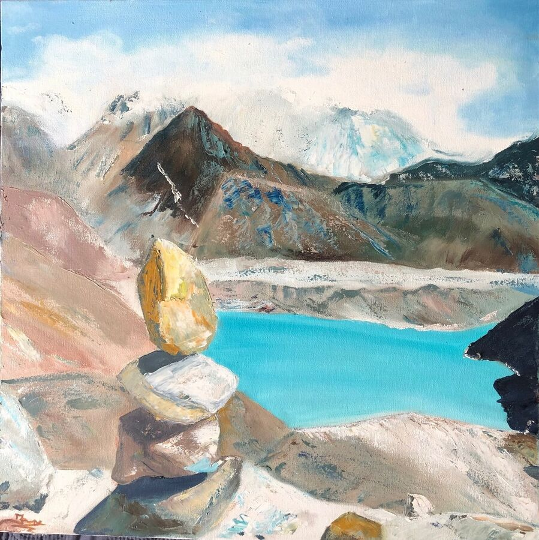
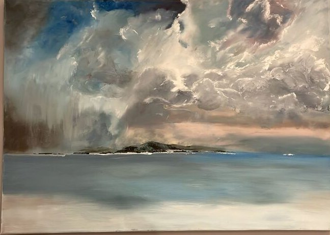
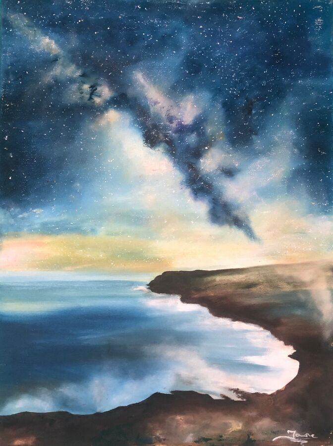
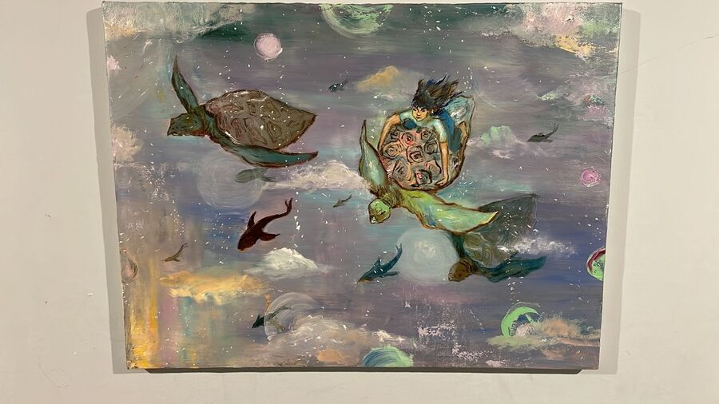
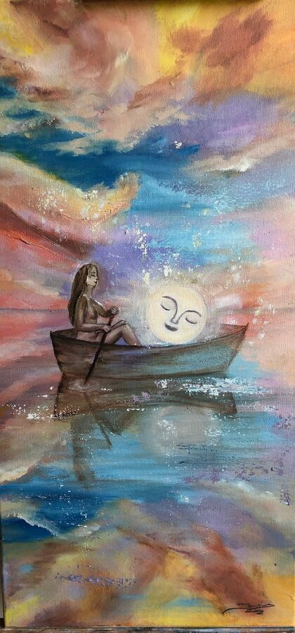

your authentic
voice open
Music, mantra, and the practices that keep the voice open.
Listen
Jane Stark has been turning prayer, medicine, and love into music since 2011. Her catalogue moves between mantra, lullaby, and original songs in Russian, English, and Sanskrit — most of it tuned to 432 Hz, all of it shaped by training in Varanasi and New York and a tour through Russia with Krishna Das.


About Jane
Jane is a pathfinder. Someone who has spent 15 years searching for peace, moving through communities, building new ones, always looking outside the mainstream for what is real and what endures. She is a guide of self-awareness practices, artist, composer, singer, poet.
Jane Stark is a singer, composer, poet, and facilitator. She holds a PhD in world economy, founded the Noble Poetry Club theatre in Dubai, and has published three poetry books. Her musical education merges eastern (Varanasi, India) and western (New York, USA) schools.
Born in Lithuania, she has lived in Russia, Italy, the USA, Belgium, the UAE, and Georgia, and for the past six years in Costa Rica.
She is interested in prayer, medicine, and love turned into music. She performs in a way that often moves audiences to tears and to silence.
She does not call her work a method. The kirtans, the constellations, the dances, the voice sessions, the painting, the poetry — these are simply the shapes her practice takes. The thread that runs through them is older than any of them.
Drop the story.
Be with the feeling.
Pain is an inevitable fact of life. Healing from it is our responsibility.
Traditional therapy works top-down: change the way you think to change how you feel. Constellations work the other way. The body moves intuitively, without needing to explain or reason. By removing the emotional charge of a story, you strip painful memories of their power and return that power to yourself.
After a single session, participants report
That is one session. Imagine immersion.
Four ways to work with Jane
Six-week online container
A small online group in English, one call per week. Each participant receives a full constellation in turn; the rest of the group serves as the field — stand-in figures whose intuitive movements reveal the system. Six weeks, six gatherings, one transformation.
Join the next group →In-person & private sessions
Available in Costa Rica or, by arrangement, elsewhere. One-to-one work or small groups, on request.
Enquire →Systemic mapping
The same lineage applied to bigger living systems: organizations, nations, ecosystems. Premium online format with trained stand-ins. For founders, leadership teams, and anyone trying to feel into a collective body that the spreadsheets cannot show.
Enquire about a session →Leela
The ancient Indian game of self-knowledge — sometimes called the original board game, dating back several thousand years. The dice are the cosmos; the squares are the planes of consciousness; the player is the soul. A single Leela session can reveal the question you didn't know you were living, and where on the path you stand.
Register for the next game →A sacred gathering
in the heart of the jungle
Through kirtan, meditation, and devotional practice, Jane invites you to dissolve into sound, reconnect with your essence, and return home to yourself. Whether you are new to kirtan or a lifelong practitioner, you are welcome exactly as you are.
Each morning begins at sunrise with mantra and meditation. Each evening closes with deep kirtan under the stars.

Upcoming
14 – 21 February 2027
Seven days of sacred song. Costa Rica.
Spaces are limited to preserve the intimacy of the gathering.
Reserve your placeLive alongside us
A few weeks a year, our guesthouse opens to one guest, or one couple, at a time.
You wake with the jungle. You join us for morning yoga, OM-chanting, and small family kirtans. You walk the permaculture garden, learn the trees, eat what the day gives. You spend the afternoons however your soul asks — writing, painting, swimming, sitting still — and sit with us again at sundown.
This is not a wellness resort. There is no air conditioning. No hot water. No menu. We live simply, and you live as we live. That is the offering.
What you receive instead is what no resort can sell you: depth. Time alongside Jane outside the format of a session or a stage. The slow re-tuning of a nervous system that has forgotten what it is to be a guest in a real home.
Enquire about a stayVoice Awakening
A gentle one-to-one online space to reconnect with your voice — not only as a musical instrument, but as a pathway to presence, confidence, breath, emotion, and self-awareness.
In these private Zoom sessions, we explore vocal freedom and resonance, breath and grounding, Indian devotional repertoire, mantra and mysticism, songs that deeply move you, and emotional expression through the voice.
These sessions are for complete beginners and for anyone longing to feel more alive, open, and authentic through sound.
Book a sessionDances of Universal Peace
Simple circle dances and chants drawn from the world's spiritual traditions — Sufi, Hindu, Buddhist, Christian, Indigenous. No experience required, no choreography to learn. The dance is the prayer.
Jane leads the Dances at gatherings and as part of her retreats.
See upcoming dancesPoetry
Three books, written in collaboration with Leonid Ilushin. Reflections (Отражения) and I Live You are full poetry collections in Russian. Moon Songs is a bilingual hardcover of original lullabies — Russian and English side by side — written for Jane's children and yours.
Jane is also the founder of the Noble Poetry Club theatre in Dubai.
Moon Songs
A hardcover collection of original lullabies, with both languages set side by side.
Buy on Lulu →I Live You
The original Russian-language collection. Republishing on Lulu later this year.
Returning soonPainting







